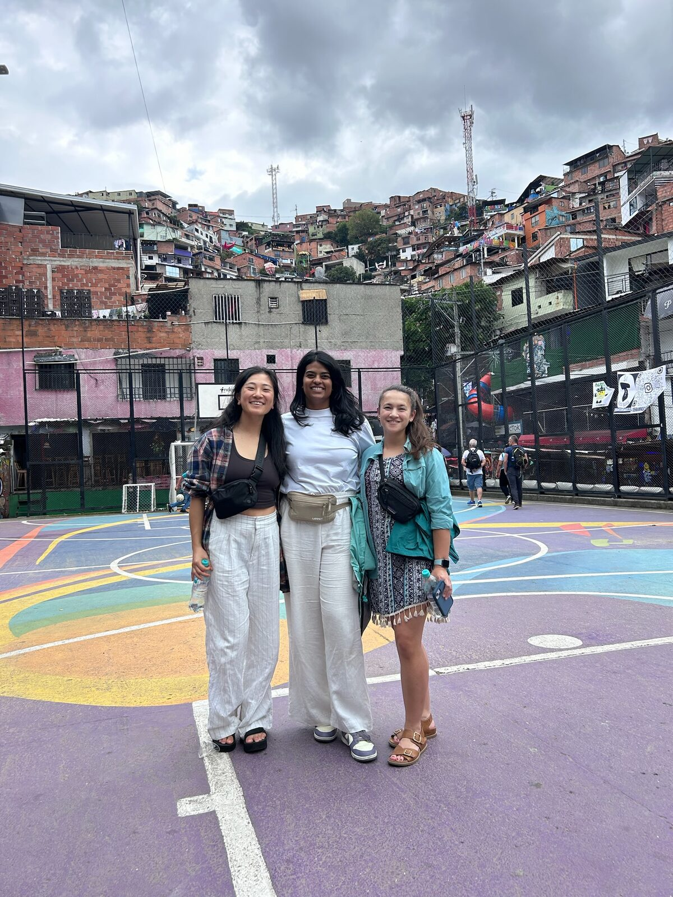
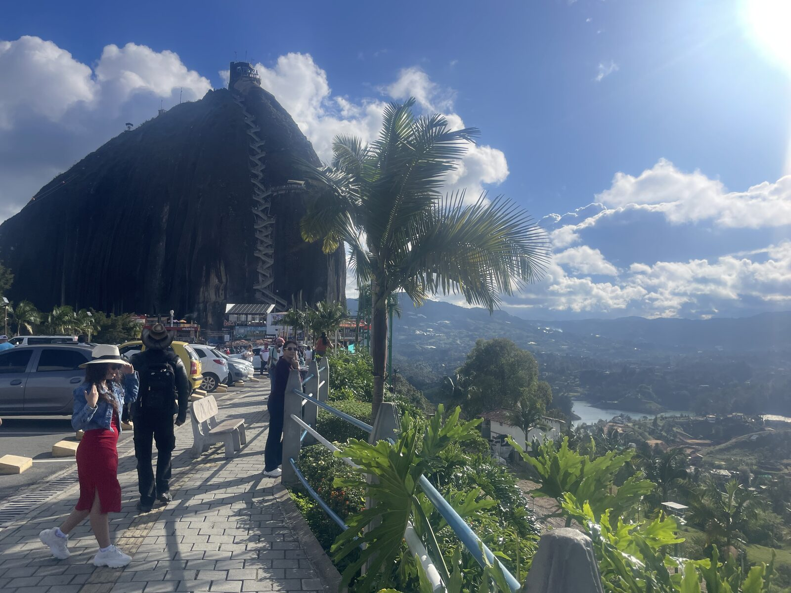

🇨🇴 Colombia
A nine-day loop through Colombia — colonial Cartagena, the jungle hill town of Minca, vibrant Medellín with Guatapé, and the capital Bogotá — mixing walking tours, waterfall hikes, and food experiences.


Travel day
Overnight flight to Colombia.
Cartagena
Afternoon walking tour of the walled old city; ask the guide for dinner recommendations.
To Minca
Bus to Santa Marta (~5 hrs), then taxi to Minca. Half-day hike to the 360 Mirador sunset viewpoint.
Minca hikes
Cascadas de Marinka and the Finca la Candelaria chocolate & coffee farm; optional Los Pinos trek past Pozo Azul.
Back to Cartagena
Explore Convento de la Popa, San Felipe de Barajas Fort, and the walled old town.
Medellín
Comuna 13 graffiti tour with street food, then a chef's tasting menu at Carmen.
Guatapé
Full-day Guatapé tour climbing Piedra del Peñol.
Bogotá
Cable car up Monserrate, a food walking tour, Paloquemao market, and La Candelaria.
Departure
Late-night flight home.
- Cartagena — walking tour of the walled old town, San Felipe de Barajas Fort
- Minca — 360 Mirador sunset hike, Cascadas de Marinka, Pozo Azul
- Finca la Candelaria — chocolate & coffee farm tour
- Medellín — Comuna 13 graffiti tour, Guatapé and Piedra del Peñol
- Bogotá — Monserrate cable car, La Candelaria, Villa de Leyva salt cathedral
- Carmen (Medellín) — chef's tasting menu with pairings
- The Lazy Cat (Minca) — cheap cocktails
- Amora Cocina Saludable (Minca) — good lunch spot
- Comuna 13 street food tour (Medellín)
- Bogotá food walking tour & Paloquemao market
- Centro / Centro Histórico, Cartagena
- Casa del Mono, Minca
- El Poblado, Medellín
- Bring cash before heading to Minca; bus tickets are cash-only.
- Aim for a bus that drops at the Santa Marta Transportation Center — closer to Minca.
- In Bogotá you can leave luggage in airport lockers.
- Pack rain gear, mosquito protection, and a headlamp for the jungle hikes.